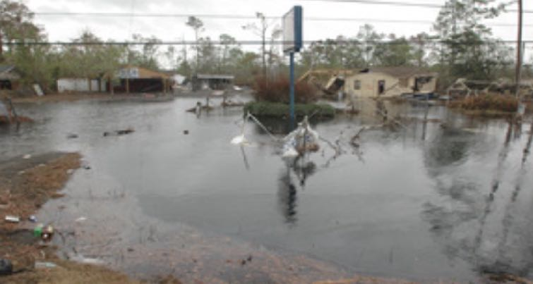
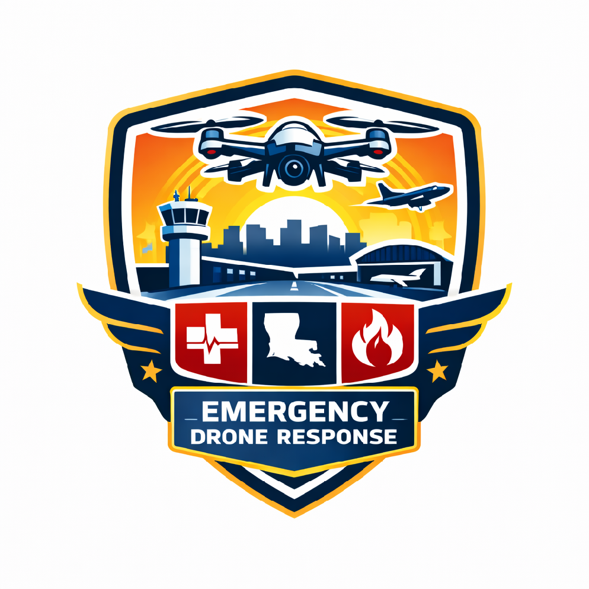

Hurricane response. Pipeline inspection. Search and rescue. Drone-as-first-responder. Connected to KLFT autonomous drone hub at Lafayette Regional Airport.
The only autonomous drone operations center for first responders between Houston and Atlanta.

Five core missions covering the full spectrum of emergency and infrastructure operations.
Skydio X10 launches within minutes of storm clearing. AI vision identifies downed power lines, structural damage, flooded roads, and stranded residents. Real-time results fed directly to OEP and GOHSEP for coordinated response.
Automated flyovers of critical energy infrastructure across southern Louisiana. Thermal imaging detects leaks, corrosion, and anomalies that human eyes miss. Continuous monitoring replaces periodic manual inspection.
Thermal and visual AI identifies heat signatures in flooded terrain, dense vegetation, and low-visibility conditions. Autonomous flight paths cover more ground at a fraction of the cost of manned aircraft.
Drone arrives on scene in under 2 minutes versus 8+ minute patrol car average. Live video streams to dispatch for real-time situational awareness before officers arrive. Over 30 US departments already operating DFR programs.
$1B NVIDIA + Nokia investment. ISAC (Integrated Sensing and Communications) turns cell towers into radar and connectivity simultaneously. Drone tracking, threat detection, and C2 links over existing telecom infrastructure.

Three NVIDIA ecosystems converging at one small airport. No other facility in the Gulf South has this.
AI agents on existing cameras. 30-100x faster than real-time video analysis. Already deployed at Bengaluru Airport (500+ cameras), Toronto Pearson, and Heathrow.
Full 3D digital twin simulation of the airfield, flight paths, and emergency scenarios. Test operations virtually before deploying in the real world. Train AI models on synthetic data.
AI processing at the drone, not in the cloud. Orin delivers 10x the processing power of previous generation. Real-time inference with zero latency to a remote server.
KLFT sits at the intersection of Metropolis (video AI), Omniverse (digital twin), and Jetson (edge compute). No other small airport in America operates at this convergence point. That is the NVIDIA Smart City reference site opportunity.
40+ years of remote operations expertise that no other city in America can match.

Lafayette's ROV industry trained remote operations specialists for over 40 years. Managing complex robotic systems in extreme environments from control rooms hundreds of miles away. Deepwater, West Africa, worldwide.
That is EXACTLY what drone operations centers need. Pilots who understand remote vehicle control, real-time telemetry, autonomous systems, and high-stakes decision making from a screen.
Three actions to stand up the Gulf Coast's first autonomous drone operations hub.
Designate an operational zone at Lafayette Regional Airport for KLFT drone operations. Defined airspace, ground infrastructure footprint, and coordination protocols with existing airport operations.
Formal coordination framework with Lafayette Fire Department, Police Department, and Office of Emergency Preparedness. Define dispatch integration, communication protocols, and chain of command.
Start with a single department to prove the model. One agency, one use case, measurable results. Expand from proven success, not from promises. The data will speak for itself.